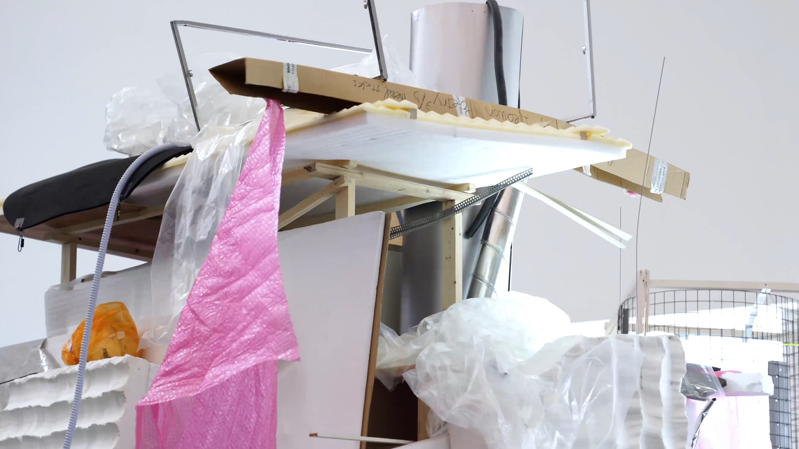
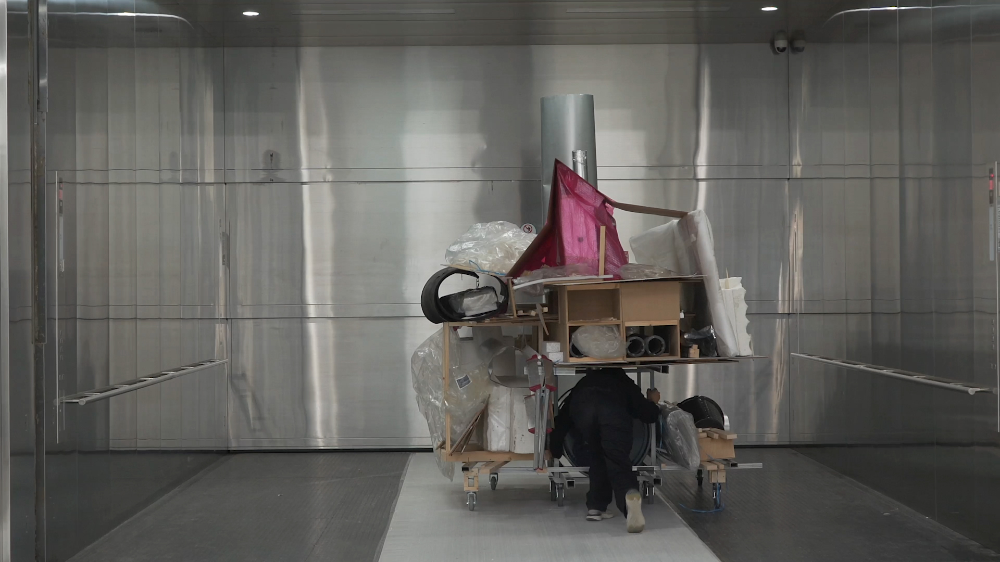
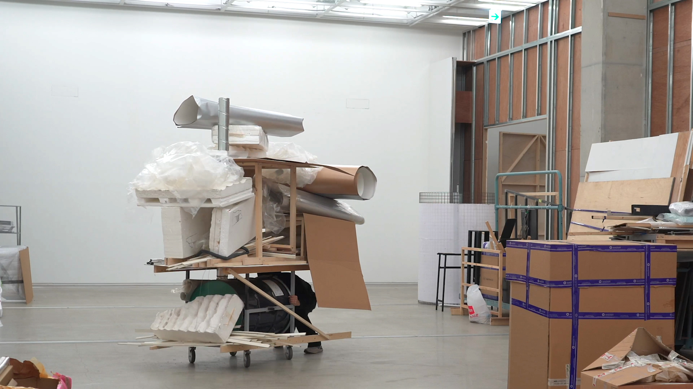
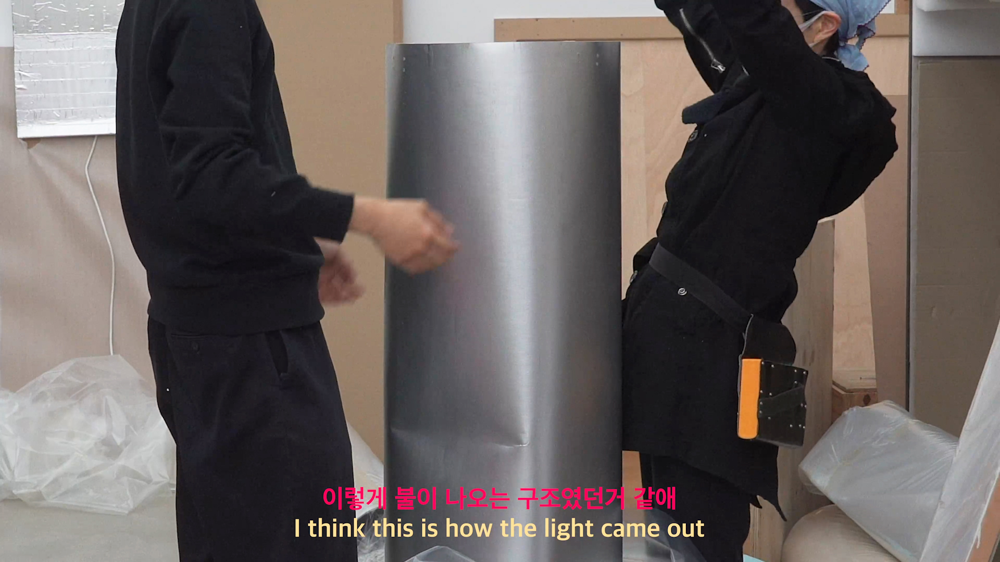
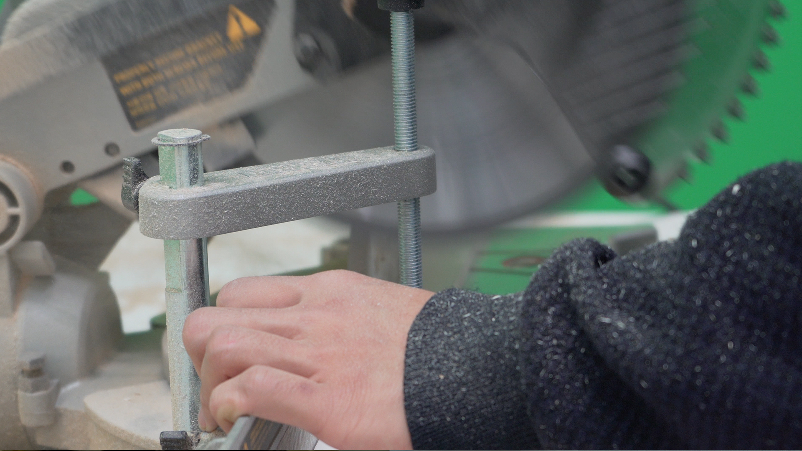
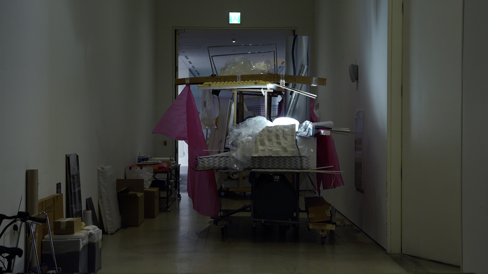
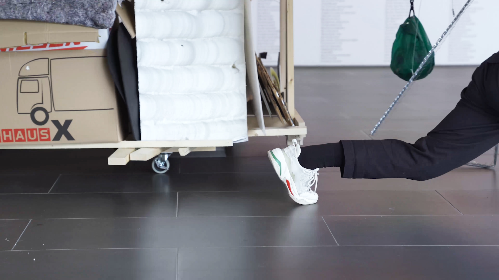
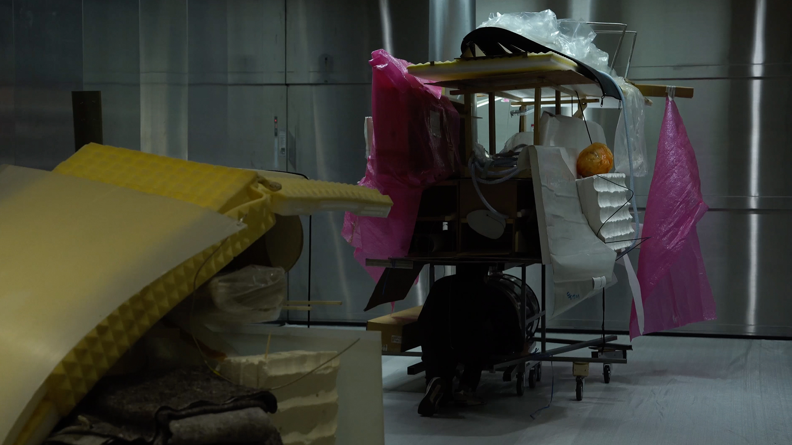
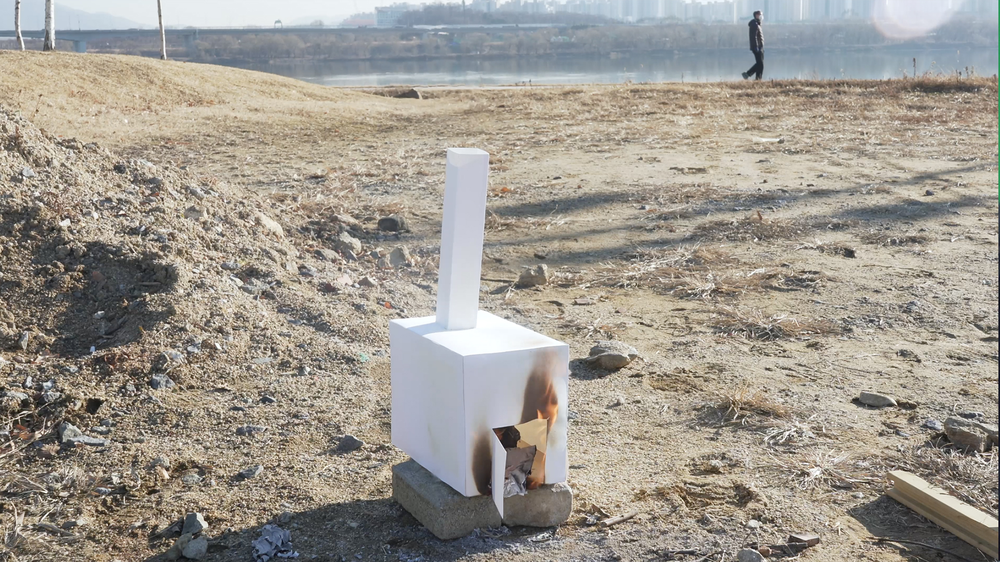

<!DOCTYPE html>
<html>
    <head>
        <meta charset="UTF-8">
        <title>Goodbye service</title>
        <link rel="stylesheet" type="text/css" href="gb.css">
        <link rel="stylesheet" href="jquery.bxslider.css">
        <script src="https://ajax.googleapis.com/ajax/libs/jquery/3.1.1/jquery.min.js"></script>
        <script src="jquery.bxslider.js"></script>
        <script>
          $(document).ready(function(){
            $('.slider').bxSlider();
          });
        </script>
    </html>
    <header>
    </header>

    <body>
      <div id="title">
          
      </div>
      <div class="slider">
        <div></div>
        <div></div>
        <div></div>
        <div></div>
        <div></div>
        <div></div>
        <div></div>
        <div></div>
        <div></div>
        

        
          
         </div>
     
         
       
        
        
      <div id="info">
        <span>  <mark>Goodbye Service,</mark> 4K video, colour, sound, 22’ 32”, 2020<br><br>
          Director / Ji-ho Park<br>
          Performer / Ji-ho park, Taeho Kim, Dong-pil Jang<br>
          Camera / Weon Jeongin, Jisu kim, shihyun Cha, Donghyun lee, Wookyung Jeon<br><br>
          Special Thanks to Jewyo rhii<br><br>
      </div>
      
      <div id="text">
        <span><br> At the end of the exhibition during the de-installation period,we opened up Jewyo Rhii’s old crates where we found unwanted works of art.
          Disposing of artworks has been my topic of interest and since the start of this exhibition, I continuously pondered ways to categorise and organise artworks for the final disposal process.
          —--
          <br>During the two weeks of de-installation, I created a portable incinerator. Towing it around the exhibition space, I collected everything that was left behind.
          The structure and shape of the incinerator altered depending on the conditions of the work.
          Certain parts were added to the portable machine, at times taken apart and even the number of wheels changed to accompany the diverse size and weight of the artworks.
          
          <br><br>The hard surfaces of the artworks acted as an additional platform and the light and delicate sections became added volume.
          I stacked as large
          and as high as possible, but the width and height of the incinerator were fixed according to the size of the doors of the museum.
          As the Love your depot exhibition space slowly emptied its contents, the incinerator grew in size.
          
          <br><br>On the final morning of de-installation, before the museum opened its doors to the public, I gathered my team to walk in procession with these unwanted objects around
          the museum space. Marching down the hallways with objects that were once monumental figures of the space was an act to recall the memories of the past and bid a final farewell.
          The person pushing the portable machine lowered his body as if bowing to the waste objects. And after a round of the exhibition space, the procession moved towards the back of the museum, where together with all the wanted works of art that were being carefully managed by art handlers and professional art movers, the incinerator too exited the museum space for the last time.
          
          <br><br>I tore apart the incinerator into smaller pieces. Parts that were reusable were collected and re-sold at a bargain price, the rest were either thrown out as rubbish or were burnt into ashes.
          None of the artists ever asked how their unwanted artworks were disposed of. My Disposal Service aims to protect artists from knowing the rather heartbreaking moments of disposing of their creations because they have already suffered enough in the process of making these works of art.
          <br><br><br><br>
        </div>
        
        <div class="video">
          <div style="padding:45% 0 0 0;position:relative;"><iframe src="https://player.vimeo.com/video/746895432?h=2f32eb641e&amp;badge=0&amp;autopause=0&amp;player_id=0&amp;app_id=58479" frameborder="0" allow="autoplay; fullscreen; picture-in-picture" allowfullscreen style="position:absolute;top:0;left:0;width:100%;height:100%;" title="폐기서비스 포폴_2.mp4"></iframe></div><script src="https://player.vimeo.com/api/player.js"></script>
        </div>       
    </body>    